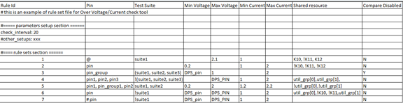

General risks
Lets you check the general test program setup risks.
These risks include:
- Unused files in test program
- HiZ risk
- Hot-switching and clamp risk
- Relay switching times risk
- MSET resource usage risk
- Overvoltage/overcurrent risk
- Multisite handling alert with test flow branching
- Tester's hardware insufficiency through EDC data
Unused files in test program
This function will check if there are unused files that are not linked by selected flow or related master file and other files.
HiZ risk
High-Z issue is caused by incomplete device set up condition. Normally the stable production pattern needs a complete status definition for all valid device pins (I/IO type). In the pattern with high-z issue, some pins definition (drive 0 or 1) are missing. The leakage from tester pin electronics will apply the unpredictable voltage shift on these pins instead of the correct set up level. If some of these pins are sensitive to functional result, it will cause functional test fail in specific tester or needs disconnect before the pattern execution. It happens mostly on correlation phase. The functional test will pass in some testers and failed in others.
This function checks related test program setup and reports HiZ risk details based on the test suite. The checks include:
- Suspicious pins which are not terminated in the level setup
- Suspicious pins whose iol and ioh voltage levels are both set to zero
- Suspicious waveform definitions by using "no drive state, tri-state on, compare Do not care" action (that is, FNZX)
- Waveform DC/DC power units used in a vector but not defined in the waveform table
- Level set 0 is not defined for termination and clamp on PS400 (Only SmarTest 6.3.6 or above).
Hot switching
About hot-switching, please see Programming guidelines for relay switching.
This function will check hot switching risk and report warning message for every selected criteria. The checks include:
- PPMU relay open->close, measure mode is voltage and clamp is in OFF state.
- PPMU relay close->open, measure mode is voltage and force current is larger than limit.
- PPMU relay open->close, measure mode is current and expected current is larger than limit
- PPMU relay close->open, measure mode is current and expected current is larger than limit
- DC relay open->close, PPMU relay is in close state
- DC relay close->open, PPMU relay is in close state
- AC relay open->close, active load enabled, load current is larger than limit, sequencer in break state
- AC relay close->open, active load enabled, load current is larger than limit, sequencer in break state
Relay switching times
Generally, both mechanical relays (reed relays) and solid state relays are used in V93000 platform.
A reed relay is a mechanical relay operated by an applied magnetic field. There are different reed relays used in V93000 channel board. They all have a similar life time. For this type of reed relay, it is typically 1000 million switching cycles at 1V and 10mA.
In some test programs, a lot of disconnect/connect, or relay switching commands are used, which are not really necessary. This wastes test time and reduces the life time of the relays. In one example, this resulted in 1.8 million relay switches per-day in production.
This function will count the switching times of DC relay, AC relay,PPMU relay and Utility line during one test flow execution and highlight risky setup pins with frequently relay switching, The relays to be checked include:
- DC relay.
- AC relay.
- PPMU relay.
- Utility line.
MSET resource usage
The Flex DC is the DC Test solution of the 93000 platform to provide flexibility and shorter test time in DC Test. When you perform the DC Test by the PPMU (Pin PMU) using Flex DC, the settings of the PPMU are stored in the sequencer memory. If the same settings of the PPMU are executed, this stored information is used and this saves the time to download the settings of the PPMU again. But the size of this area in the sequencer memory is limited and if the number of the settings of the PPMU is very large, some settings may not be stored in the sequencer memory due to the lack of space. This situation is known as "MSET Overflow".
When the number of the DC Tests is large and many different settings are used in the application, the system cannot store all of the settings in the specified MSET. If this situation happens, the reserved two DC_SETs are used repeatedly to set the different settings. Therefore, the setting of the PPMU is downloaded every time and this slows down the test execution time. In some cases, the test execution time becomes more than 10 times slower than the execution time without MSET Overflow.
This function will record all MSET resource usage in the second run of test flow and highlight this MSET Overflow risk.
Overvoltage/overcurrent risk
This function checks digital pins, DPS pins and DC Scale pins during test program execution and identifies any risky setup of voltage and current against the custom rule set that defines the allowed max/min voltage ,current and power setup over I/O pins and power supply pins.
Supported pin types:
- For digital pins, the voltage checked are vil/vih, the current value checked are iol/ioh.
- For DPS pins, the voltage checked is vout set in the level file, and the current checked is the ilimit also set in the level file.
- For DC Scale DPS pins, the voltage and current forced in the test event will be checked besides the setup in level file.
- For DC Scale signal pins, the voltage and current forced in the test event will be checked.
Custom rule set example:

Multisite handling alert with test flow handling
This function checks
Check tester's hardware insufficiency through EDC data
This function checks if the hardware of the tester is enough or not for one test program by checking EDC data and device license file.
Functional changes
- Introduced in SmarTest 7.3.3
- TP360 3.10.4: Check tester's hardware insufficiency through EDC code is added.